Boss CE-2 Analysis
The Chorus Ensemble CE-2 is a chorus pedal by Roland/Boss released in 1979. It adds a dreamy modulated sound that creates a dramatic ambient guitar tone.
After the great success of the bulky Chorus Ensemble CE-1 issued in 1976, which was based on the Roland Jazz Chorus JC-120 Amplifier integrated chorus effect, Boss decided to revise and release a similar sounding effect but in a compact size modifying the circuitry. The CE-2 builds on the legacy of the CE-1 with reduced features: mono output instead of stereo, no vibrato mode, no integrated power supply, no level and no intensity controls.
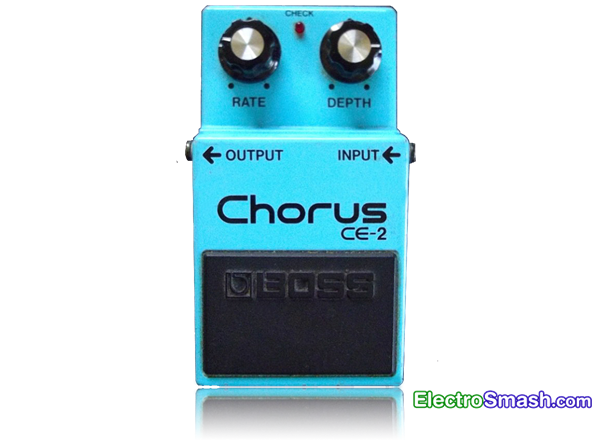
The CE-1 was designed more to be a multi-instrument effect, with a 50K low input impedance suitable for keyboards. The CE-2 has higher input impedance and boosted mid frequencies, both arrangements very suitable for electric guitars.
Roland stopped marketing the CE-2 in 1982, however still produced until 1990. There are basically 3 versions of the pedal:
- Made in Japan - black label (1979-1984)
- Made in Japan - green label (1984-1988)
- Made in Taiwan - green label (1988-1991)
Table of Contents.
1. The Chorus Effect.
1.1 Chorus Effect Architecture.
2. Roland/Boss CE-2 Circuit.
2.1 Boss CE-2 Layout.
2.2 Roland/Boss CE-2 Components Part List.
3. JFET Bypass Switch.
4. Power Supply.
4.1 Boss ACA vs. PSA Power Supply Adapters.
5. Input Buffer.
5.1 Boss CE-2 Input Impedance.
6. Pre-De Emphasis Filters.
6.1 Shelving Filters with Operational Amplifiers.
6.1.1 Inverting OpAmp shelving Filters.
6.1.2 Non-Inverting OpAmp shelving Filters.
6.2 Pre-Emphasis Filter.
6.3 De-Emphasis Filter.
7. Anti-Aliasing & Reconstruction Filters.
7.1 The Sallen-Key Filter Topology:
7.2 Anti-Aliasing Filter.
7.3 Reconstruction Filter.
8. Bucket Brigade Device Stage.
8.1 Low-Frequency Oscillator.
9. Resources.
9.1 Datasheets.
The Chorus or Celeste effect was integrated into Hammond organs since the 1940s. Some early stand-alone stompboxes like Vibra-Chorus and Uni-Vibe by Shin-Ei were released in 1960s, creating some degree of phase shifting or chorus modulation.
As a matter of fact, the Roland/Boss CE-1 Chorus Ensemble taken from the JC-120 amp circuit is renowned as the Mother of Chorus, being the standard for the modern chorus sound. The CE-2 follows the same tonal response.
1.1 Chorus Effect Architecture.
The chorus is a delay based effect: the resulting sound is a mix of the original input signal and the incoming audio run through a BBD delay time device:
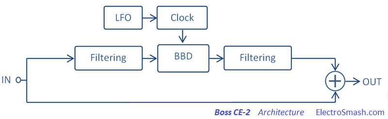
Before and after the BBD delay action, there are some stages needed to avoid signal degradation: Pre/De-Emphasis and Anti-Aliasing/Reconstruction filters.
The amount of delay to be applied is modulated by an LFO (Low-Frequency Oscillator). The usual delay times are around 5 to 50ms and LFO oscillating frequencies are up to 20Hz.
The most used LFO waveforms are sine and triangle:
- The sine waveform produces a very smooth sound as the pitch is constantly changing.
- The triangle LFO only produces two pitches and the change between the pitches is sudden. CE-2 uses triangle LFO waveforms.
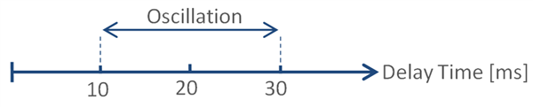
The common controls in chorus pedals are:
- Modulation Rate/Speed/Period: Adjusts the LFO frequency in the hertz region (range of the natural human vibrato).
- Delay: Adjusts the amount of delay to be applied to the modulated signal.
- Depth/Modulation Range: Adjusts the amount of modulation to be applied to the delay time.
- Mix: Adjusts the blend between the original dry and modulated wet signals.
- Stereo Option: Some designs include stereo output that creates richer chorus and a wider stereo image. There are several possibilities:
- Some pedals (Boss CE-1) have two outputs: A dry output with no effect, and the wet output where the signal is modulated. Hearing both signals together the chorus effect is created.
- Some pedals (Boss CE-3) have two outputs: on one side it adds the wet effected signal to the dry signal, and on the other side it subtracts the effected signal from the dry signal.
- Another approach is to generate a double wet output signal, using two independent delays which share the same LFO (Low-Frequency Oscillator) but modulated 180 degrees out of phase.
- Vibrato Option: In this mode, only the dry signal is eliminated, keeping only at the output the wet modulated signal.
2. Roland/Boss CE-2 Circuit.
The CE-2 schematic can be broken down into some simpler blocks: JFET Bypass Switch, Power Supply, Input Buffer, Pre-De Emphasis Filters, Anti-Aliasing & Reconstruction Filters and Bucket Brigade Device Stage.
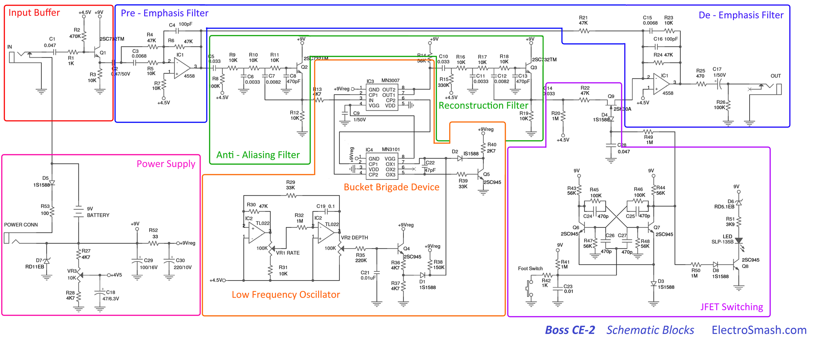
Note: The components are labeled following the original Roland/Boss PCB numeration.The circuit is designed around the MN3007 1024 stage BBD (IC3) and the MN3101 clock driver (IC4). The input and output circuits use the dual op-amp uPC4558C IC, while the LFO is implemented with the help of a TL022LP op-amp. Some additional active filtering is applied using Sallen-Key transistor stages.
The effect response is commanded using two controls:
- The Rate knob adjusts the frequency of the LFO generator, adjusting the vibrato pitch.
- The Depth potentiometer sets the amplitude of the LFO triangular signal, which is related to the amount of modulation.
2.1 Boss CE-2 Layout.
The printed circuit board is designed to tightly fit into the standard boss enclosure:
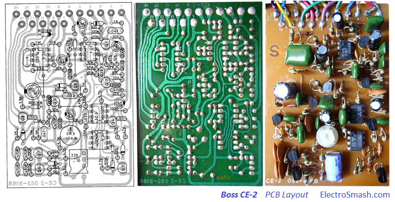
It is a single layer PCB with insertion components. The top of the board contains all the pads to attach the cables to be connected to the jack connectors, potentiometers, and the footswitch.
2.2 Roland/Boss CE-2 Components Part List / Bill of Materials:
In the first row the quantity of items are shown, the values of the capacitors are in micro farads.
2 C1,C28: 0.047
1 C2: 0.47/50V
2 C3,C15: 0.0068
2 C4,C16: 100pF
3 C5,C10,C14: 0.033
2 C6,C11: 0.0033
2 C7,C12: 0.0082
2 C8,C13: 470pF
2 C9,C17: 1/50V
1 C18: 47/6.3V
1 C19: 0.1
1 C21: 0.01uF
1 C22: 47pF
1 C23: 0.01
4 C24,C25,C26,C27: 470p
1 C29: 100/16V
1 C30: 220/10V
5 D1,D3,D4,D5,D8: 1S1588
1 D2: IS1588
1 D6: RD5.1EB
1 D7: RD11EB
1 Foot Switch
2 IC1: 4558
2 IC2: TL022
1 IC3: MN3007
1 IC4: MN3101
2 JACK OUT, JACK IN
1 POWER CONN
3 Q1,Q2,Q3: BC239BP/ZTX
5 Q4,Q5,Q6,Q7,Q8: 2SC945
1 Q9: 2SK30A
2 R1,R42: 1K
1 R2: 470K
14 VR3,R3,R5,R7,R9,R10,R11,R12,R16,R17,R18,R19,R23,R31: 10K
6 R4,R6,R21,R22,R24,R30: 47K
6 VR1 RATE,VR2 DEPTH,R8,R26,R45,R46: 100K
5 R13,R27,R28,R36,R37: 4K7
5 R14,R43,R44,R47,R48: 56K
1 R15: 330K
5 R20,R32,R41,R49,R50: 1M
1 R25: 470
2 R29,R39: 33K
1 R35: 220K
1 R38: 150K
1 R40: 2K7
1 R51: 3K9
1 R52: 33
1 R53: 100
1 SLP-135B LED
2.3 Boss CE-2 True Bypass Alternative:
In the original CE-2 pedal when the effect deactivated, the input signal will always pass through the Input Buffer and the Pre/De-Emphasis filters, despite symmetric, they might add some coloring to the guitar tone.
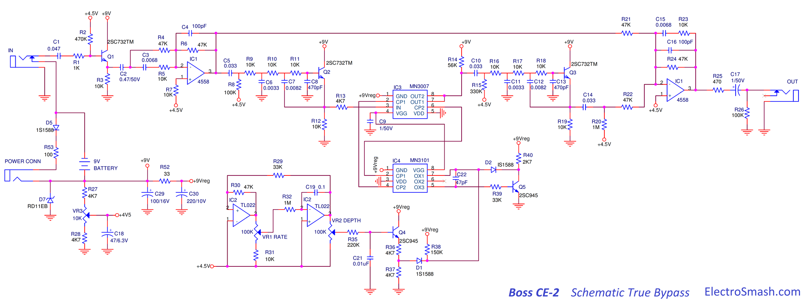
Considering the fact that the input impedance of the CE-2 is low, around 407KΩ, it might result in the loading of the guitar pickups. As a rule of thumb, the input impedance should be at least 1 MΩ.
For these reasons new CE-2 clones and old modded units, often include true bypass (Triple Pole Double Throw 3PDT switch) gives the cleanest possible path for the bypassed signal. It also carries other benefits like the number of components used in the pedal and using a light indicator and a power-on LED at the same time.
3. JFET Bypass Switch.
The JFET Bypass is made of one switch Q9 and a toggle block formed by Q6 and Q7 to manage the switch. This configuration can activate/deactivate the effect using a simple push button.
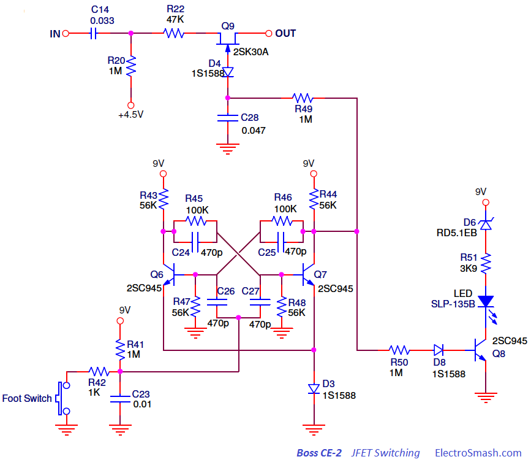
The JFET Bypass Switch enables two possible toggle configurations:
- It can turn the effect on, activating the Q9 BJT and allowing the wet signal to be taken into consideration by the output stage summing amplifier.
- It can turn the effect off, deactivating the Q9 BJT and isolating the wet signal from the summing amplifier.
The Boss/Roland pedals have similar switching setup to the Ibanez/Maxon. For a detailed information check the Tube Screamer Switching Circuit.
4. Power Supply.
The Power Supply Stage provides the electrical power and bias voltage to all the circuitry, the whole power consumption is low and estimated around 9mA:
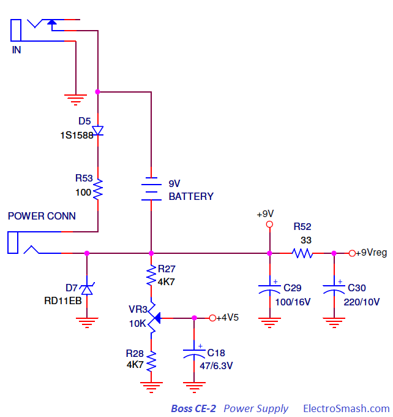
- The diode D7 protects the pedal against adapter reverse polarity connections.
- The resistor voltage divider composed by R27, R28, and VR3), generates 4.5V to be used as a bias voltage in some stages. The resistors junction (+4.5V) is decoupled to ground with a large value electrolytic capacitor C18 47uF. The VR3 potentiometer is able to finely trim the 4.5 voltage: sometimes due to the loading of all stages, the 4.5 voltage might suffer some offset, the BBDs are sensitive to the bias, adjusting VR3 will bring maximum clean headroom.
- The circuit formed by C29, R52 and C30 is a Pi CRC second order low pass filter, with an attenuation roll-off of –40 dB/decade over the cut-off frequency (22Hz). The 9V regulated line will bring the supply for the Bucket Brigade Stage, rejecting high-frequency harmonics which are especially harmful in BBDs signal processing due to the clocking noise of the MN3101 clock driver.
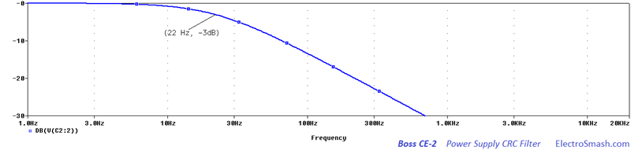
- The stereo in jack is used as an on-off switch, switching the battery (-) terminal to ground when the guitar jack is connected.
4.1 Boss ACA vs. PSA Power Supply Adapters.
The early Boss products like CE-2 with reduced power consumption used the ACA adapters which provide unregulated 12VDC (unregulated means that the output voltage drops when current consumption exceeds the maximum capacity, which is 250mA). This pedal was originally designed for an external 12V ACA supply adapter.
The series resistor R53 and diode D5 between the minus input on the power jack and ground are used to reduce the internal voltage supply.
V = 12V -VF = 12V - 1.2V = 10.8V.
With new products with higher power consumption, the PSA adapter was introduced which provides regulated 9VDC (regulated means that provide a constant voltage at any current under the max. capacity 200mA). This kind of adapter is the most common and used in all pedals nowadays.
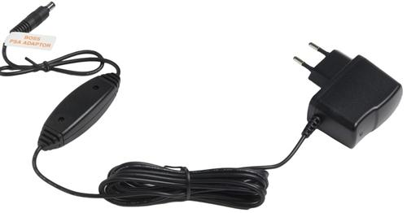
In order to make the old ACA pedals compatible, the resistor and diode can be removed and replaced with jumpers.
The Daisy chain Trick: Powering the old CE-2 pedals designed for ACA 12VDC input with either a newer 9V ACA or PSA adapter will not work properly. The voltage drop over the resistor and diode will under-power the pedal making the power-on LED glow faintly. One easy solution is to use a daisy chain cable together with another standard pedal. The link between the two pedals will short the resistor-diode circuit and the pedal will receive full power.
5. Input Buffer.
The task of the Input Stage Buffer is to create a high input impedance so as to preserve signal integrity and avoid high-frequency signal loss. It is implemented with a plain Emitter Follower with unity voltage gain (GV=1):
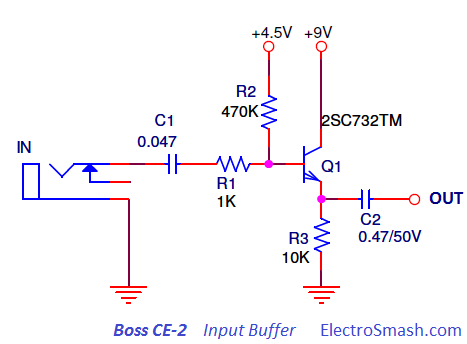
The 2SC732TM-GR NPN transistor is a cheap high gain (ß=200~400), low noise suitable for audio applications.
The capacitor C1 forms a high-pass filter filtering the low frequency humming in conjunction with the input resistors R1, R2 and the transistor stage input impedance. It also separates the guitar from any pedal DC potential, protecting the pickups in case of circuit failure.
5.1 Boss CE-2 Input Impedance.
In order to calculate numerically the input impedance of the emitter follower, the hybrid-pi model can be used for analyzing the small signal behavior.
The analysis of this parameter is similar to the Tube Screamer input stage, if you want to follow all the mathematics check the Tube Screamer Input Impedance Calculation, otherwise just stick to the general formula:
Therefore, the CE-2 input resistance is 407K, almost the value of the biasing resistor R2 (470K) which accounts for almost the entire signal loading at the input.
6. Pre-Emphasis & De-Emphasis Filters.
The assumption of using these filters is that applying treble emphasis (pre-emphasis) and a corresponding identical treble reduction (de-emphasis) to the dry signal, the output signal will end up with the same original tonal balance. But applying the same filtering to the delay signal, the output signal will reduce any hiss acquired via the delay path.
For this purpose, two 1st order Shelving Filters are used in the input and output stages, each of these filters will create a zero and a pole, with a rising/falling slope of 6dB/octave or 20dB/decade.
6.1 Shelving Filters with Operational Amplifiers.
The Shelving architecture is simple first-order filter function characterized by a frequency response with two different gains: GainLOW and GainHIGH between frequencies much higher and much lower than the corner frequencies.
This filters can be implemented over operational amplifiers, using inverting or non-inverting topologies. Boss CE-2 uses the op-amp inverting architecture.
Note: In order to achieve clock noise attenuation properly, inverting shelving filters (pre & post) are mandatory. Blending non-inverting & inverting will give mismatched gain & frequencies. The nature of non-inverting topology provides no attenuation and minimum gain=1. Only inverting topology offers both gain & attenuation, and both low & high inverting shelving filters share exactly same resistors & capacitors in reverse order, yielding matched frequencies and desired opposite gains, and this is why they are used in the Boss CE-2.
6.1.1 Inverting OpAmp Shelving Filters.
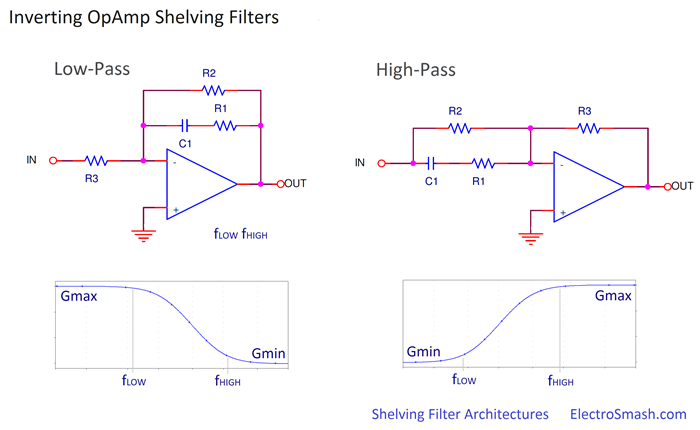
|
Low-Pass Filter Formulas: \[ \\G_{LOW} = -\frac{R_{2}}{R_{3}}\]
\[ \\G_{HIGH} = -\frac{R_{1}//R_{2}}{R_{3}}\]
\[ \\fc_{HIGH}=\frac{1}{2\cdot \pi \cdot C_{1} \cdot R_{1}}\]
\[ \\fc_{LOW}=\frac{1}{2\cdot \pi \cdot C_{1} \cdot (R_{1}+R_{2})}\]
\[\\ \frac{G_{LOW}}{G_{HIGH}} = \frac{f_{HIGH}}{f_{LOW}}\]
|
.......... |
High-Pass Filter Formulas: \[\\G_{LOW} = -\frac{R_{3}}{R_{2}}\]
\[\\G_{HIGH} = -\frac{R_{3}}{R_{1}//R_{2}}\]
\[\\fc_{HIGH}=\frac{1}{2\cdot \pi \cdot C_{1} \cdot R_{1}}\]
\[\\fc_{LOW}=\frac{1}{2\cdot \pi \cdot C_{1} \cdot (R_{1}+R_{2})}\]
\[\\ \frac{G_{LOW}}{G_{HIGH}} = \frac{f_{LOW}}{f_{HIGH}}\]
|
6.1.2 Non- Inverting OpAmp shelving Filters:
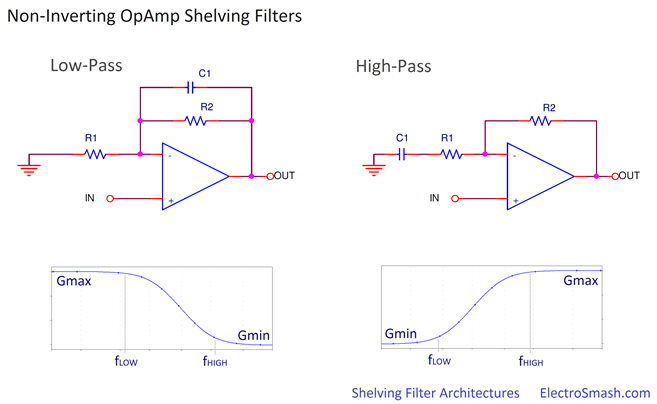
|
Low-Pass Filter Formulas: \[\\G_{LOW} = 1 + \frac{R_{2}}{R_{1}}\]
\[\\G_{HIGH} = 1 \]
\[\\fc_{LOW}=\frac{1}{2 \cdot \pi \cdot C_{1} \cdot R_{2}}\]
\[\\fc_{HIGH}=\frac{1}{2 \cdot \pi \cdot C_{1} \cdot R_{1}//R_{2}}\]
\[\\G_{LOW} = \frac{f_{HIGH}}{f_{LOW}}\]
|
.......... |
High-Pass Filter Formulas: \[\\G_{LOW} = 1 \]
\[\\G_{HIGH} = 1 + \frac{R_{2}}{R_{1}}\]
\[\\fc_{LOW}=\frac{1}{2\cdot \pi \cdot C_{1} \cdot (R_{1} + R_{2})}\]
\[\\fc_{HIGH}=\frac{1}{2\cdot \pi \cdot C_{1} \cdot R_{1}}\]
\[\\G_{HIGH} = \frac{f_{HIGH}}{f_{LOW}}\]
|
If R1 were much smaller than R2, there would be a 20dB/decade roll-off between the two gains. If R2 is not so much less, then the slope never quite makes it to 20dB/decade before it flattens out to the high frequency gain.
Note: The ratio fHIGH/fLOW is equal to the ratio of GainHIGH/GainLOW. It is fixed, so if you want a lot of cut or boost in the shelf, then the frequencies where the shelf starts and ends will be further apart and vice versa.
6.2 Boss CE-2 Pre-Emphasis Filter.
The active Pre-emphasis Filter formed by the 4558 dual op-amp is designed to increase the magnitude of the high frequencies with respect to the mid-low frequencies, in order to enhance the overall S/N ratio by minimizing the adverse effects of attenuation and distortion created for the BBD stage:
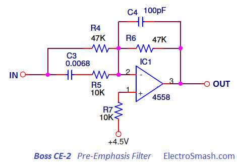
For the lows, the caps C3 and C4 are considered open circuits, leaving 47K at the input and 47K feedback and therefore resulting in a gain of 1. For high frequencies, there is a parallel path using 6n8 cap and 10K resistor, providing a gain of 5.7 above 2.4 KHz.
- The small 100pF C4 capacitor across the feedback loop works as a low pass filter, mellowing out the high end of the signal and limiting the bandwidth which is a classic arrange in stompboxes input stages that also maintain HF stability.
Pre-Emphasis Filter Frequency Response
As mention above, this circuit emphasizes the frequencies over 410 Hz. At 2.3KHz the gain keeps still at 15dB.
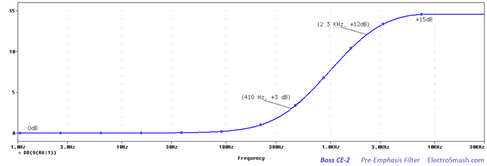
6.3 De-Emphasis Filter.
The De-Emphasis Filter is the complement of the Pre-Emphasis Filter. It is also implemented over the 4558 dual op-amps and designed to attenuate the magnitude of the high frequencies with respect to the mid-low frequencies. This filter takes the unnatural sounding pre-emphasized audio and turns it back into its original response.
The op-amp is configured in the classic summing amplifier topology, the equal size of the weighting resistors R21=R22=R24=47K indicates that the mix ratio between the dry and the wet signal is 50%.
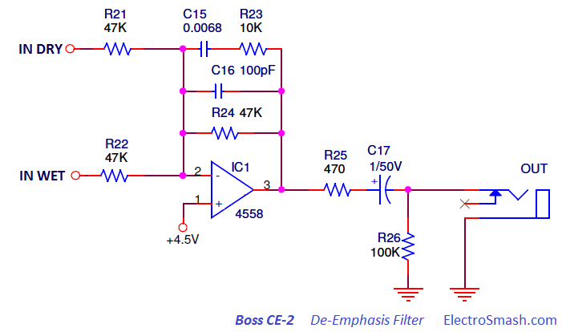
To implement this filter, the same 6n8/10k previously used in the input stage is used in the feedback loop providing complementary treble cut over 2.34 KHz
- The small 100p C16 capacitor across the feedback loop works as a low pass filter, mellowing out the high end of the signal and limiting the bandwidth which is a classic arrange in stompboxes input stages that also maintain HF stability.
De-Emphasis Filter Frequency Response
As mention above, this circuit attenuates the frequencies over 410 Hz. At 2.3KHz the gain keep still at -15dB.
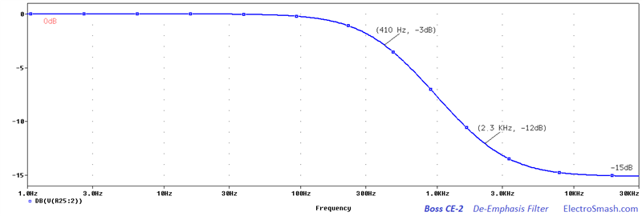
7. Boss CE-2 Anti-Aliasing Filter & Reconstruction Filters.
Anti-alias filters are used to band-limit the input signal and remove the harmonic content at that is introduced by the BBD sampling process.
In the reverse process, anti-imaging (or reconstruction) filters are used at the output of a sampled system to eliminate spectral images of the desired signal. These are generated at integer multiples of the sample rate. The ideal filter specification is the same as that for the anti-aliasing filter.
For both Anti-Aliasing and Reconstruction filters, the Low pass Sallen-Key topology is used; creating a frequency response that removes very severely the high frequencies.
7.1 The Sallen-Key Filter Topology.
The Sallen-Key is a simple filter architecture used to build second order active filters. It has a high input impedance and low output impedance, including a buffer amplifier implemented in this case over a BJT emitter/source follower.
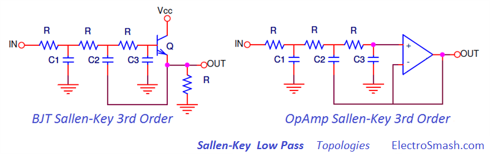
A common configuration for BBD based designs is to use a 3rd order Sallen-Key, implemented using a passive 1st order RC filter + a 2nd order standard Sallen-Key.
The 3rd order Sallen-Key Function:
The equivalent block diagram:
So, you can make all the numbers or use the simple 3rd Order Sallen-Key Low Pass Filter Design Tool by Okawa Electric Design and get the cut-off frequencies.
7.2 Boss CE-2 Anti-Aliasing Filter.
The Anti-Aliasing Filter is an active low pass filter used before the signal sampler (BBD) in order to restrict the bandwidth of the signal to approximately satisfy the Nyquist-Shannon Sampling Theorem. In this way, the input signal is bandlimited to prevent aliasing.
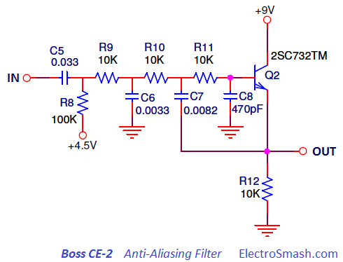
Just before the anti-aliasing low pass filter, there is another passive high pass filter formed by R8 and C5, generating a cut-off frequency of 48Hz that will bandlimit and cut the humming of the incoming signal. The cut-off frequency can be calculated as:
Frequency Response of Anti-Aliasing Filter:
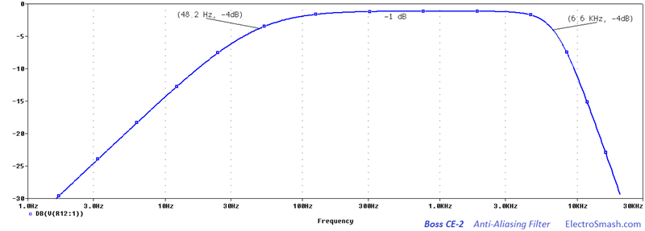
The frequency response is a band-pass filter, letting the harmonics between 48 Hz and 6.6 KHz. The low pass cut-off frequencies can be calculated as mention before, the poles are at fc1 = 6,6 KHz and fc2 = 6,9 KHz
7.3 Boss CE-2 Reconstruction Filter.
The Reconstruction Filter also called Anti-Imaging Filter is again a low pass filter used to construct a smooth analog signal from a sampled output. The output signal must be bandlimited, to remove the clock noise and prevent aliasing (meaning Fourier coefficients being reconstructed as low-frequency waves, not as higher frequency aliases).
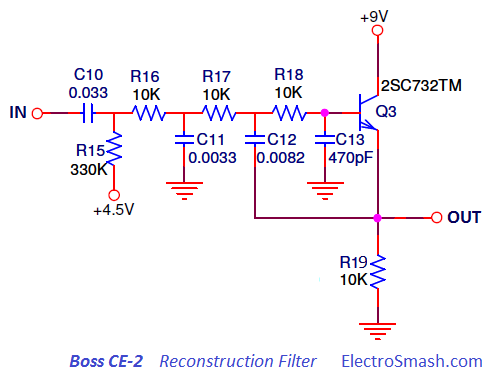
Just before the anti-aliasing low pass filter, there is another passive high pass filter formed by R15 and C10, generating a cut-off frequency of 48Hz that will bandlimit and cut the humming of the incoming signal. The cut-off frequency can be calculated as:
This 14.6 Hz cut-off frequency seems to be the only difference between the filtering after and before the BBD, which is indeed mirrored. After the delay stage, slightly more bass pass through the circuit.
Frequency Response of Reconstruction Filter:
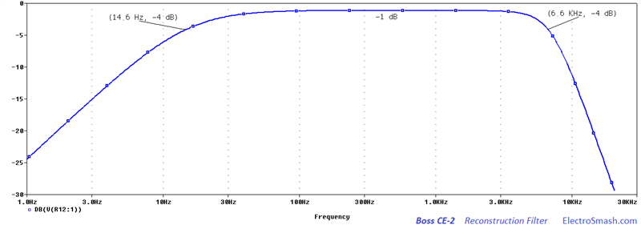
The frequency response is a band-pass filter, letting the harmonics between 14.6Hz and 6.6 KHz. The low pass cut-off frequencies are the same as in the Anti-aliasing filter because the circuit is exactly the same (fc1 = 6,6 KHz and fc2 = 6,9 KHz).
8. The Bucket Brigade Device Stage.
The BBD is the core of the circuit: the MN3007 which is well known for its fine audio response is used together with a clock signal generator MN3101. At the same time, a Low-Frequency Oscillator (LFO) is needed to drive the MN3101 in order to generate the variable delay time which is the gist of the chorus effect.
- MN3007: is a 1024 stages BBD by Matsushita/Panasonic which provides a signal delay from 5.12 to 51.2ms. To create the chorus effect a delay from 5 to 40ms is needed, so this part is perfect for the task. It also has good S/N=80dB, low THD of 0.5% typ (VIN=0.78Vrms). The supply voltage range is from -10 to -15V.
- MN3101: Is a clock generator driver by Matsushita/Panasonic, in a small footprint package designed to match the MN3007 providing:
- A two-phase clock, the frequency value is selected by the LFO.
- Stable VGG bias supply to the MN3007. This DC bias value (VGG = 4/15 x VCC) improves the BBD transfer efficiency.
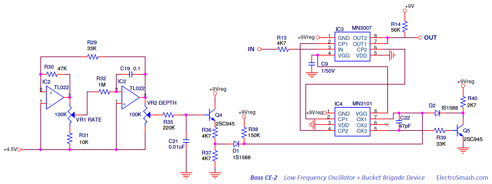
In summary, the cap C22 47pF is charging-discharging at a fast rate (set by the Q5 astable), but the starting voltage level of C22 is commanded by the LFO signal, sent through the Q4 buffer:
- The Q5 transistor forms an RC astable oscillator with the MN3101. It is used to discharge the C22 47pF timing capacitor, which is charged through the R38 150K resistor. Indeed, Q5 together with the MN3101 will oscillate by itself at a constant frequency without Q4 and its associated components.
When the output of the double series inverters (pin 5) in the MN3101 goes high (in response to the cap charging to the CMOS threshold voltage as monitored by MN3101 pin 7) Q5 turns on and discharges the cap, and the MN3101 output goes low again, turning the transistor off and allowing the cap to re-charge. The cycle repeats at an ultrasonic rate.
- The Q4 transistor is an emitter follower that provides buffering to the triangle waveform from the LFO.
Immediately after C22 discharge, the diode D1 is needed to isolate the output of Q4 transistor. This diode serves to charge it up again to an "offset" voltage corresponding to the present voltage at the LFO output.
Actually the capacitor offset charging voltage = (VoutLFO - Vbe)/2 - VFdiode
8.1 Boss Ce-2 LFO Low-Frequency Oscillator.
The chorus effect is created by the slow modulation of the delay time using a Low-Frequency Oscillator (LFO). As the LFO cycles, the delay time goes up and down and therefore the delayed audio pitch slightly shifts up and down.
The LFO is implemented using a dual op-amp TL022 in cascade; this op-amp has a low current consumption, which is good to prevent ticking in the power supply. Some ticking can be mixed with the audio when the LFO produces the rising or falling edge of a square wave and there is a very sudden surge in the current.
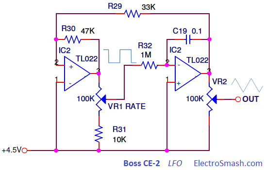
The first operational amplifier in the chain generates the square wave, while the second operational amplifier generates the triangle signal.
This simple circuit provides a variable frequency triangular waveform whose amplitude is also variable.
After the second op-amp, there is a low pass RC filter (R35 C21) with a cut-off frequency of 72Hz (1/2πRC) which filters the LFO signal, removing all possible high-freq ticking noise.
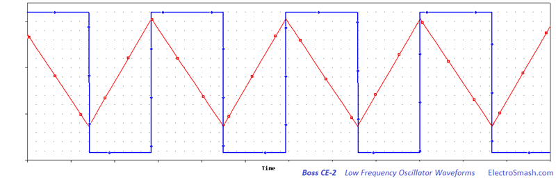
- The first op-amp is in a threshold detector in positive feedback Trigger-Schmitt configuration.
The oscillation frequency can be calculated following the formula of the Triangle Oscillator by Ron Mancini:
With Rate control at maximum position, the oscillation frequency is 3.5Hz, this value will decrease as the VR1 pot is trimmed.
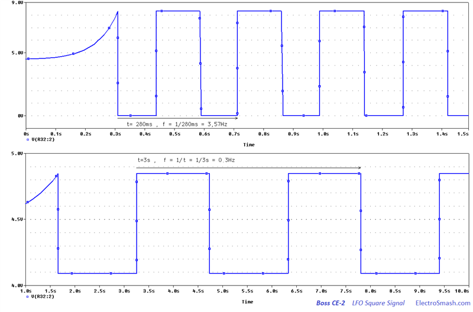
- The second op-amp is an Integrator which generates the ramp. The action of VR2 will modify the steepness of the ramp and therefore the amplitude or depth at a fixed frequency.
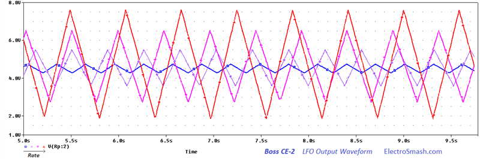
9. Resources.
All CE-2 treads in DIYStompBoxes and Mark Hammer explanations.
Boss CE-2 Information by BossArea
Chorus Effect Explanation by TestTone
http://audacity.sourceforge.net/manual-1.2/effects_chorus.html
Chorus guitar effects by Hobby Hour
Tonepad CE-2 Cloning Project
Triangular Wave Generators by FreeCircuits
3rd Order Sallen-Key Filter with one OpAmp by EDN.
Shelving Filters by Linkwitzlab.
Boss ACA and PSA adaptors by StinkFoot.
Pre-Emphasis and De-Emphasis filters in DIYStompBoxes.
9.1 Datasheets.
BOSS CE-2 Instructions pdf.
BOSS CE-2 Service Notes pdf.
2SC732TM Transistor pdf.
Our sincere appreciation to G. Franc, B. Maynard and Dror Sharon for your support.
Thanks for reading, all feedback is appreciated
Some Rights Reserved, you are free to copy, share, remix and use all material.
Trademarks, brand names and logos are the property of their respective owners.
Rescued from a 2022 Wayback Machine capture of the original electrosmash.com article, which is no longer online. Some links to pages outside this archive have been removed. The original PDF export of this article is in the pdf backups folder.